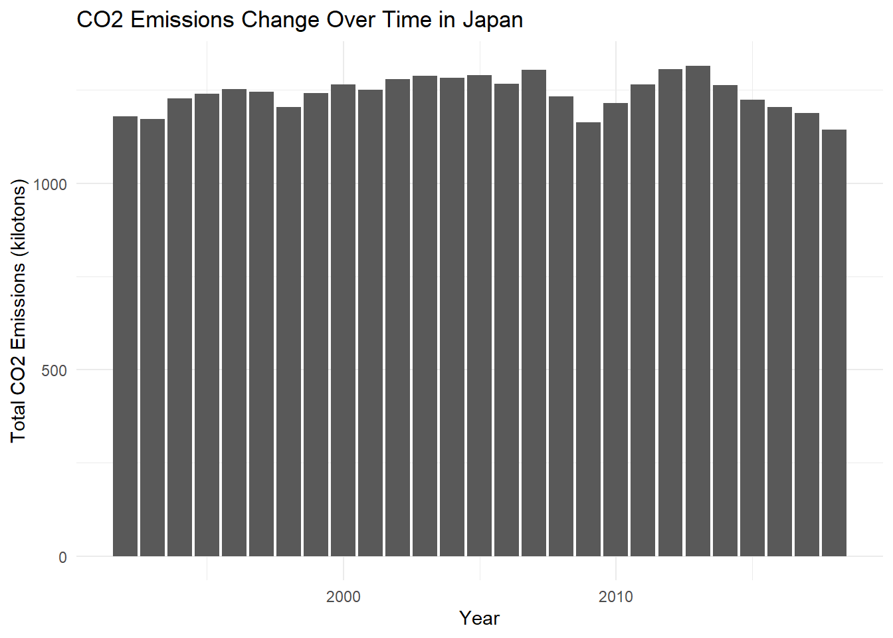
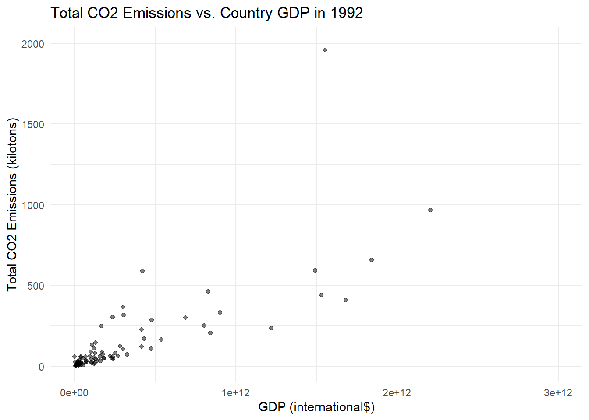

library(tidyverse)
library(skimr)Project title
Exploratory data analysis
Research question(s)
Research question(s). State your research question (s) clearly.
How do changes in GDP for developing versus developed countries correlate to their global CO2 emissions
Using the definition of developing versus devleoped countries as defined by the United Nations:
https://www.un.org/en/development/desa/policy/wesp/wesp_current/2014wesp_country_classification.pdf
In 2018, how do different countries’ GDP correlate to their global CO2 emissions?
In 1992, how different countries’ GDP correlate to their global CO2 emissions?
Data collection and cleaning
Have an initial draft of your data cleaning appendix. Document every step that takes your raw data file(s) and turns it into the analysis-ready data set that you would submit with your final project. Include text narrative describing your data collection (downloading, scraping, surveys, etc) and any additional data curation/cleaning (merging data frames, filtering, transformations of variables, etc). Include code for data curation/cleaning, but not collection.
pollution <- read_csv("data/global_emissions.csv")Rows: 2484 Columns: 20
── Column specification ────────────────────────────────────────────────────────
Delimiter: ","
chr (2): Country.Name, Country.Code
dbl (18): Year, Country.GDP, Country.Population, Emissions.Production.CH4, E...
ℹ Use `spec()` to retrieve the full column specification for this data.
ℹ Specify the column types or set `show_col_types = FALSE` to quiet this message.glimpse(pollution)Rows: 2,484
Columns: 20
$ Year <dbl> 1992, 1993, 1994, 1995, 1996, 199…
$ Country.Name <chr> "Afghanistan", "Afghanistan", "Af…
$ Country.Code <chr> "AFG", "AFG", "AFG", "AFG", "AFG"…
$ Country.GDP <dbl> 12677538816, 9834580992, 79198571…
$ Country.Population <dbl> 14485543, 15816601, 17075728, 181…
$ Emissions.Production.CH4 <dbl> 7.13, 7.21, 7.47, 7.83, 8.67, 9.4…
$ Emissions.Production.N2O <dbl> 2.89, 2.93, 2.76, 2.88, 3.12, 3.4…
$ Emissions.Production.CO2.Cement <dbl> 0.046, 0.047, 0.047, 0.047, 0.047…
$ Emissions.Production.CO2.Coal <dbl> 0.022, 0.018, 0.015, 0.015, 0.007…
$ Emissions.Production.CO2.Gas <dbl> 0.363, 0.352, 0.338, 0.322, 0.308…
$ Emissions.Production.CO2.Oil <dbl> 0.927, 0.894, 0.860, 0.824, 0.780…
$ Emissions.Production.CO2.Flaring <dbl> 0.022, 0.022, 0.022, 0.022, 0.022…
$ Emissions.Production.CO2.Other <dbl> 0.000000e+00, 0.000000e+00, 2.220…
$ Emissions.Production.CO2.Total <dbl> 1.379, 1.333, 1.282, 1.230, 1.165…
$ `Emissions.Global Share.CO2.Cement` <dbl> 0.01, 0.01, 0.01, 0.01, 0.01, 0.0…
$ `Emissions.Global Share.CO2.Coal` <dbl> 0.00, 0.00, 0.00, 0.00, 0.00, 0.0…
$ `Emissions.Global Share.CO2.Gas` <dbl> 0.01, 0.01, 0.01, 0.01, 0.01, 0.0…
$ `Emissions.Global Share.CO2.Oil` <dbl> 0.01, 0.01, 0.01, 0.01, 0.01, 0.0…
$ `Emissions.Global Share.CO2.Flaring` <dbl> 0.01, 0.01, 0.01, 0.01, 0.01, 0.0…
$ `Emissions.Global Share.CO2.Total` <dbl> 0.01, 0.01, 0.01, 0.01, 0.00, 0.0…This data was found at the website:
https://ourworldindata.org/co2-and-greenhouse-gas-emissions
Then the data was downloaded following the download link on that website, which took
The data needed no further tidying/cleaning as it is already in the proper format with one column per variable, one row per observation, and once cell per value.
Data description
Have an initial draft of your data description section. Your data description should be about your analysis-ready data.
Motivation
For what purpose was the dataset created?
- The dataset was created to show how emissions are changing in each country and allows for comparisons of various countries and regions in relation to overall emission trends along with their sources.
Who created the dataset (e.g., which team, research group) and on behalf of which entity (e.g., company, institution, organization)?
- The Our World in Data team created the original dataset on behalf of the Our World in Data project, which is a project of the Global Change Data Lab (a non-profit organization based in the United Kingdom), and the current dataset we will be using is a subset from the original dataset from the CORGIS Dataset Project created by Sam Donald.
Who funded the creation of the dataset?
- The Global Change Data Lab funded the creation of the dataset and it is a registered charity in England and Wales. Their work is made possible by donations of individuals and organizations that have made contributions to support their project.
Composition
What do the instances that comprise the dataset represent (e.g., documents, photos, people, countries)?
- The instances that comprise the dataset represent countries (per year from 1992 to 2018).
How many instances are there in total (of each type, if appropriate)?
- There are 2484 instances total.
What are the observations (rows) and the attributes (columns)?
The observations (rows) are countries per year.
The attributes (columns) are year, country name, country code, country GDP, country population, emissions production CH4, emissions production N2O, emissions production CO2 cement, emissions production CO2 coal, emissions production CO2 gas, emissions production CO2 oil, emissions production CO2 flaring, emissions production CO2 other, emissions production CO2 total, emissions global share CO2 cement, emissions global share CO2 coal, emissions global share CO2 gas, emissions global share CO2 oil, emissions global share CO2 flaring, emissions global share CO2 total.
Collection Process
How was the data associated with each instance acquired?
- The original dataset is built upon a number of datasets and processing steps. The datasets that were processed include Statistical review of world energy (BP), International energy data (EIA), Primary energy consumption (Our World in Data based on BP’s Statistical review of world energy & EIA’s International energy data), Global carbon budget - Fossil CO2 emissions (Global Carbon Project), Global carbon budget - Global carbon emissions (Global Carbon Project), Global carbon budget - National fossil carbon emissions (Global Carbon Project), Global carbon budget - National land-use change carbon emissions (Global Carbon Project), Global carbon budget (Our World in Data based on the Global Carbon Project’s Fossil CO2 emissions, Global carbon emissions, National fossil carbon emissions, and National land-use change emissions), Greenhouse gas emissions (including methane and nitrous oxide) by sector (CAIT), CO2 dataset (Our World in Data based on all sources above), Population (Our World in Data based on a number of different sources), and GDP (University of Groningen GGDC’s Maddison Project Database, Bolt and van Zanden, 2020). The current dataset we are using extracts from the original dataset.
What processes might have influenced what data was observed and recorded and what was not?
- The current dataset we will use depends on the datasets it was built off of and how they were processed, so if certain countries or emission data were left out of those datasets, they will also be left out of our dataset.
If people are involved, were they aware of the data collection and if so, what purpose did they expect the data to be used for?
- There were no people involved in the dataset.
Preprocessing/cleaning/labeling
What preprocessing was done, and how did the data come to be in the form that you are using?
- The various datasets that were the foundation for the original dataset underwent processing steps (the codes of which can be found at this website, https://github.com/owid/co2-data), the names of countries and regions were standardized, the carbon emissions were recalculated to CO2 (e.g. from tonnes of carbon to tonnes of CO2 using a conversion factor of 3.664), and per capita figures were calculated from the dataset’s “Population” metric, which is included in the complete dataset and the population figures were sourced from Gapminder and the UN World Population Prospects (UNWPP).
- The current dataset we will use is a subset of the original dataset, with all the tonnes units converted into kilotons and the variable names altered.
Is the software that was used to preprocess/clean/label the data available?
- The link for the software and code that was used to preprocess/clean/label the data: https://github.com/owid/co2-data
Data limitations
Identify any potential problems with your dataset.
Not all 195 countries are in our dataset, which limits the scope of our dataset a bit.
The years within the dataset only range from 1992 to 2018, which could be a limitation because the range is 26 years, which may or may not be a long enough time period to see substantive changes in GDP or CO2 emissions. Additionally, this dataset does not contain data for more recent years, which could be another limitation if we want to see the most up-to-date data on GDP/emissions for different countries.
Exploratory data analysis
Perform an (initial) exploratory data analysis.
#average GDP of countries
pollution |>
group_by(Country.Name) |>
summarize(mean = mean(Country.GDP))# A tibble: 92 × 2
Country.Name mean
<chr> <dbl>
1 Afghanistan 33132487623.
2 Albania 21086224119.
3 Algeria 337419554968.
4 Angola 80080787153.
5 Argentina 644263431130.
6 Armenia 21997234897.
7 Australia 846270603567.
8 Austria 306055723842.
9 Azerbaijan 87440896379.
10 Bangladesh 324340371911.
# … with 82 more rows#average total CO2 emissions of countries
pollution |>
group_by(Country.Name) |>
summarize(mean = mean(Emissions.Production.CO2.Total))# A tibble: 92 × 2
Country.Name mean
<chr> <dbl>
1 Afghanistan 3.96
2 Albania 3.68
3 Algeria 110.
4 Angola 19.1
5 Argentina 160.
6 Armenia 4.30
7 Australia 371.
8 Austria 68.8
9 Azerbaijan 34.9
10 Bangladesh 42.6
# … with 82 more rows#visualizing change in GDP over time for a developed country
pollution_usa <- pollution |>
filter(Country.Name == "United States")
ggplot(data = pollution_usa, mapping = aes(x = Year, y = Country.GDP)) +
geom_col() +
theme_minimal() +
labs(
title = "GDP Change Over Time in USA",
x = "Year",
y = "GDP (international$)"
) #visualizing change in GDP over time for another developed country
pollution_japan <- pollution |>
filter(Country.Name == "Japan")
ggplot(data = pollution_japan, mapping = aes(x = Year, y = Country.GDP)) +
geom_col() +
theme_minimal() +
labs(
title = "GDP Change Over Time in Japan",
x = "Year",
y = "GDP (international$)"
) #visualizing change in GDP over time for a developing country
pollution_pakistan <- pollution |>
filter(Country.Name == "Pakistan")
ggplot(data = pollution_pakistan, mapping = aes(x = Year, y = Country.GDP)) +
geom_col() +
theme_minimal() +
labs(
title = "GDP Change Over Time in Pakistan",
x = "Year",
y = "GDP (international$)"
) #visualizing change in GDP over time for another developing country
pollution_vietnam <- pollution |>
filter(Country.Name == "Vietnam")
ggplot(data = pollution_vietnam, mapping = aes(x = Year, y = Country.GDP)) +
geom_col() +
theme_minimal() +
labs(
title = "GDP Change Over Time in Vietnam",
x = "Year",
y = "GDP (international$)"
) #visualizing change in CO2 emissions over time for a developed country
ggplot(data = pollution_usa,
mapping = aes(x = Year, y = Emissions.Production.CO2.Total)
) +
geom_col() +
theme_minimal() +
labs(
title = "CO2 Emissions Change Over Time in USA",
x = "Year",
y = "Total CO2 Emissions (kilotons)"
) #visualizing change in CO2 emissions over time for another developed country
ggplot(data = pollution_japan,
mapping = aes(x = Year, y = Emissions.Production.CO2.Total)
) +
geom_col() +
theme_minimal() +
labs(
title = "CO2 Emissions Change Over Time in Japan",
x = "Year",
y = "Total CO2 Emissions (kilotons)"
) 
#visualizing change in CO2 emissions over time for a developing country
ggplot(data = pollution_pakistan,
mapping = aes(x = Year, y = Emissions.Production.CO2.Total)
) +
geom_col() +
theme_minimal() +
labs(
title = "CO2 Emissions Change Over Time in Pakistan",
x = "Year",
y = "Total CO2 Emissions (kilotons)"
) #visualizing change in CO2 emissions over time for another developing country
ggplot(data = pollution_vietnam,
mapping = aes(x = Year, y = Emissions.Production.CO2.Total)
) +
geom_col() +
theme_minimal() +
labs(
title = "CO2 Emissions Change Over Time in Vietnam",
x = "Year",
y = "Total CO2 Emissions (kilotons)"
) #visualizing relationship between GDP and total CO2 emissions in 2018
pollution_18 <- pollution |>
filter(Year == 2018)
ggplot(data = pollution_18,
mapping = aes(x = Country.GDP, y = Emissions.Production.CO2.Total)
) +
geom_point(alpha = 0.5) +
xlim(0, 4e+12) +
ylim(0, 2000) +
theme_minimal() +
labs(
title = "Total CO2 Emissions vs. Country GDP in 2018",
x = "GDP (international$)",
y = "Total CO2 Emissions (kilotons)"
) Warning: Removed 4 rows containing missing values (`geom_point()`).#visualizing relationship between GDP and total CO2 emissions in 1992
pollution_92 <- pollution |>
filter(Year == 1992)
ggplot(data = pollution_92,
mapping = aes(x = Country.GDP, y = Emissions.Production.CO2.Total)
) +
geom_point(alpha = 0.5) +
xlim(0, 3e+12) +
ylim(0, 2000) +
theme_minimal() +
labs(
title = "Total CO2 Emissions vs. Country GDP in 1992",
x = "GDP (international$)",
y = "Total CO2 Emissions (kilotons)"
) Warning: Removed 3 rows containing missing values (`geom_point()`).
The average GDP for all countries (between 1992 and 2018) in the dataset were calculated and can be found in the displayed tibble.
The average total CO2 emissions for all countries (between 1992 and 2018) in the dataset were calculated and can be found in the second displayed tibble.
Through visualizing the change in GDP over time for the two developed (United States and Japan) countries and the two developing countries (Pakistan and Vietnam), it can be seen that it appears that developing countries have a much higher rate of increase in GDP over time than developed countries do. However, as expected, the developing countries have much lower GDPs than developed countries in general.
Through visualizing the change in total CO2 emissions over time for the two developed (United States and Japan) countries and the two developing countries (Pakistan and Vietnam), it can be seen that it appears that developing countries have a much higher rate of increase in total CO2 emissions over time than developed countries do. Additionally, developed countries’ total CO2 emissions don’t appear to vary too much over the years, staying at a relatively high emission rate. Furthermore, as expected, despite higher rates of increase in the total CO2 emissions over time for developing countries, developed countries tend to have much higher total CO2 emissions overall than developing countries.
The observations above could indicate a possible correlation between GDP growth and an increase in CO2 emissions. It could also indicate that developed countries tend to produce much more CO2 than developing countries, contributing much more to climate change, but that there is a upward trend in development in developing countries that is also increasing CO2 emissions.
The graphs of “Total CO2 Emissions vs. Country GDP in 2018” and “Total CO2 Emissions vs. Country GDP in 1992” demonstrate a potential positive linear relationship between GDP and total CO2 emissions for the different countries across the years of 1992 to 2018.
Questions for reviewers
List specific questions for your peer reviewers and project mentor to answer in giving you feedback on this phase.
Do we need to convert the names of the variables/columns in the dataset to have underscores and all lowercase letters like the variables we usually use, or is it okay to leave them as is.
Is the 2014 definition of what a developed vs developing country is as defined by the United Nations not recent enough of a definition?
Are our research questions interesting enough/feasible?